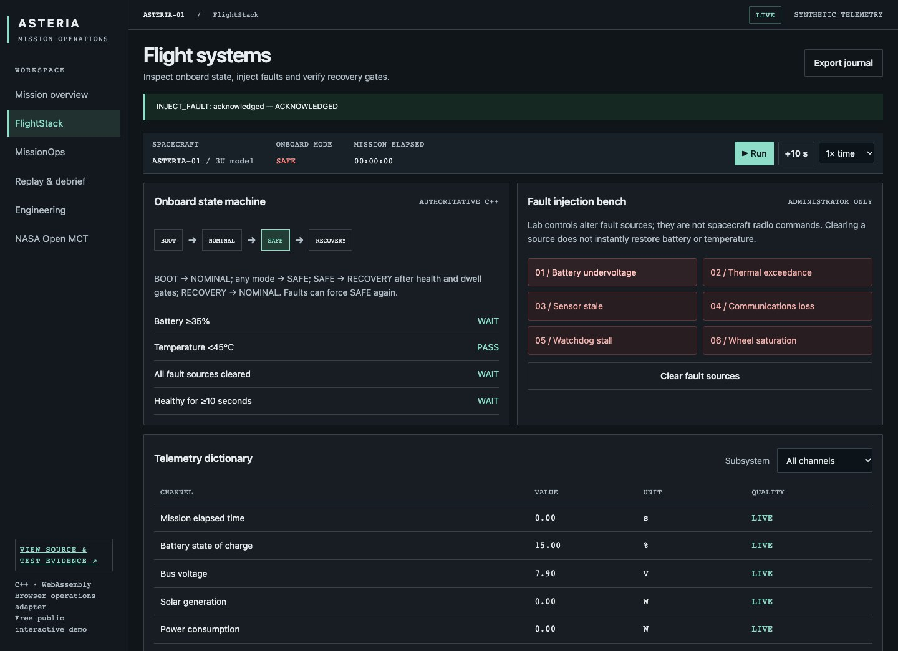

Asteria.
I built a spacecraft simulator and ground system to trace what happens between issuing a command and confirming its outcome. The flight model enforces safety checks, and the console records the telemetry an operator can use to reconstruct the decision.
01 / MY CONTRIBUTION
My contribution.
Why I wanted to build it
A command request is not evidence that a spacecraft acted. The engineering problem was to keep state ownership, ground rules, onboard protection and the operator’s understanding consistent—even when commands fail or telemetry becomes stale.
My contribution
I built the C++ spacecraft model and integrated it with NASA F Prime, command and telemetry services, executable procedures, a ground console and recorded-mission replay. The public browser edition runs that C++ model through WebAssembly. The full F Prime / FastAPI / database stack runs locally.
02 / HOW THE PIECES CONNECT
How the pieces fit together.
- 01Operator intentCommands and lab fault controls
- 02Independent guardsRole, mode, resource and health gates
- 03C++ / WebAssemblyAuthoritative model + autonomous protection
- 04Evidence journalTelemetry, terminal outcomes and replay
The browser is a self-contained software simulation. It does not host F Prime, FastAPI or PostgreSQL on the web server.
- 01Ground consoleSubsystem views and NASA Open MCT
- 02FastAPI gatewayPydantic contracts + HTTP / WebSocket
- 03F Prime + C++Isolated process bridge + typed ports
- 04Durable journalSQLite / PostgreSQL and read-only replay
The shared flight model connects both delivery paths; the deployment boundary stays explicit.
03 / THE REASONING BEHIND THE BUILD
Choices I made along the way.
Give spacecraft state one owner.
One F Prime FlightComputer component wraps the coupled subsystem models. This makes fault protection an atomic decision. Splitting the subsystems further would require explicit synchronization and a new state-ownership contract.
Recovery must earn its way through the gates.
Clearing an injected source does not restore battery charge or temperature. RECOVER waits for battery ≥35%, temperature <45°C, fresh sensors, valid communications and wheel conditions, plus ten healthy simulated seconds. RESUME remains a separate command.
Replay the evidence without reissuing commands.
The journal records requested commands, terminal outcomes and received telemetry. Replaying it must not mutate the live spacecraft. That distinction matters whenever a reviewer reconstructs what an operator actually knew.

04 / RESULTS WITH THEIR SCOPE
What I checked.
| AREA | RECORDED RESULT | WHAT THE RESULT MEANS |
|---|---|---|
| Automated verification | 199 tests | 83 flight + 82 ground + 34 API cases in the documented local release. |
| Traceability | 60 requirements | 40 flight and 20 ground requirements mapped to verification. |
| Framework integration | 171 parity frames | Three seeds across six injected faults; separately 48,708 typed-port samples. |
| Coverage | 90.95% branches | 191/210 branches in the instrumented flight/flight.hpp header, rather than whole-stack coverage. |
Synthetic spacecraft, simplified subsystem physics and logical simulation steps. No real RF/orbital latency, hardware-in-the-loop, flight qualification or production authentication is represented. Browser roles are training personas.